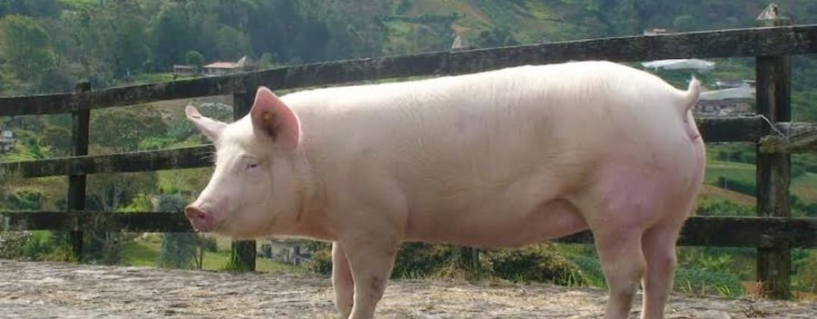

HOMOCLAVEREI_M_001Sano
| Peso al nacer | 50 |
| Peso destete | 60 |
| Ganancia peso | 300 |
| Consumo leche | 7 |
| Consumo alimento | 3 |
| Edad destete | 10 |
| Perimetro | 46 |
| Dias tratamiento | 0 |
| Vigor nacer | 67 |
| Consumo calostro | alto |
| Salud general | sano |
| Consistencia | normal |
| Reflejo | fuerte |
| Condicion umbilical | sano |
| Apetito | bueno |
| Aspecto pelaje | brillante |
